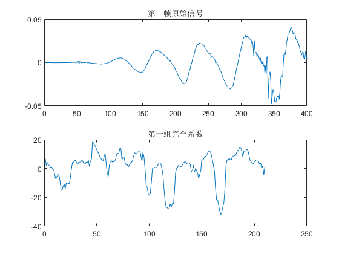

Contents
准备
clear, clc, close all % 预先定义好常数变量 [x,fs] = audioread('female1.wav'); winLength = .025*fs; inc = .01*fs; xLength = length(x); % 画图 figure;plot(x); title('原始语音信号')
第一步
%预加重 x = filter([1 -0.97],1,x); % 分帧 Frames = floor((xLength-winLength)/inc)+1; xMat = zeros(winLength, Frames); for f = 1:Frames xMat(:, f) = x((f-1)*inc+1:(f-1)*inc+winLength); end % 加窗 xHannWin = xMat.*hann(winLength, 'periodic'); % 画图 figure; subplot(311); plot(x(1:winLength)), title(['第一帧语音信号，长度', num2str(winLength),'个样本']); subplot(312); plot(x(1:winLength)), title('第一帧语音信号加重高频后'); subplot(313); plot(xHannWin(1:winLength)), title('第一帧语音信号加窗后');
第二步
Nfft = 2048; X = fft(xHannWin, Nfft); XPower = 1/Nfft*abs(X(1:Nfft/2+1, :)).^2; % XPower = 1/Nfft*abs(X).^2; % 画图 figure; plot(XPower(1, :)), title('第一帧功率谱')
第三步
a 建立梅尔三角滤波器组，300Hz为最低频，fs/2Hz为最高频，建立32个三角滤波
MelOrd = 32; MelLowerF = 2595*log10(1+0/700); MelUpperF = 2595*log10(1+(fs/2)/700); MelFreq = linspace(MelLowerF, MelUpperF, MelOrd+2); Freq = 700*(10.^(MelFreq/2595)-1); FreqBins = floor(Freq/fs*(Nfft+1)); FreqBins(FreqBins==0) = 1; Hm = zeros(MelOrd, Nfft/2+1); for k = 2:MelOrd+2-1 prev = FreqBins(k-1); mid = FreqBins(k); post = FreqBins(k+1); % for i = prev:mid % if i == 0, i = i+1; end % Hm(k, i) = (i-prev)/(mid-prev); % end % for i = mid:post % Hm(k, i) = (post-i)/(post-mid); % end % Hm(k-1, prev:mid) = linspace(0,1, mid-prev+1); Hm(k-1, mid:post) = linspace(1,0, post-mid+1); end % b % 将功率谱和梅尔滤波器组相乘，每一组滤波器以一个求和能量值进行表示 Energy = Hm*XPower; % 大小为【MelOrd, Frames】，每一列是一组滤波器的相乘结果 Energy = max(Energy, eps); % 画图 figure; for i = 1:MelOrd plot(Hm(i, :)); hold on end title('mfcc bank 32 组') hold off figure; plot(Energy(1, :)), title('第一组能量')
第四步
求对数能量
LogEnergy = log10(Energy); % 画图 figure; plot(LogEnergy(1, :)), title('第一组对数能量')
第五步
计算DCT
preserveOrd = 13; DCTEnergy = dct(LogEnergy); mfcc = DCTEnergy(2:preserveOrd+1, :); % 画图 figure; plot(mfcc(1, :)), title('第一组倒谱系数')
附加步骤，升倒谱平滑输出
L = 22; lift = 1+L/2*sin(pi*(1:preserveOrd)/L); liftRep = repmat(lift, Frames, 1); mfccLift = mfcc.*liftRep'; % 画图 figure; subplot(211), plot(lift); title('升倒谱函数') subplot(212), plot(mfccLift(1, :)); title('第一组升倒谱后系数')

附加步骤，计算一阶和二阶差分
M = 2; b = M:-1:-M; filt = b./(2*sum((1:M).^2)); % mfccPad = [mfccLift, repmat(mfccLift(:, end), 1, 2*M)]; % delta = zeros(size(mfccLift)); % for i = 1:Frames % delta(:, i) = mfccPad(:, i:i+2*M)*filt; % end delta = filter(filt', 1,mfccLift',[],1); deltadelta = filter(filt,1,delta,[],1); figure; subplot(211); plot(delta(:, 1)); title('一阶差分'); subplot(212); plot(deltadelta(:, 1)); title('二阶差分');
输出
mfcc3 = [mfccLift; delta'; deltadelta']; figure; subplot(211); plot(x(1:winLength)), title('第一帧原始信号') subplot(212); plot(mfcc3(1, :)), title('第一组完全系数')